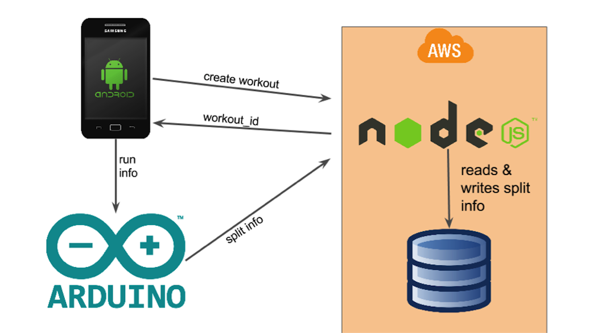
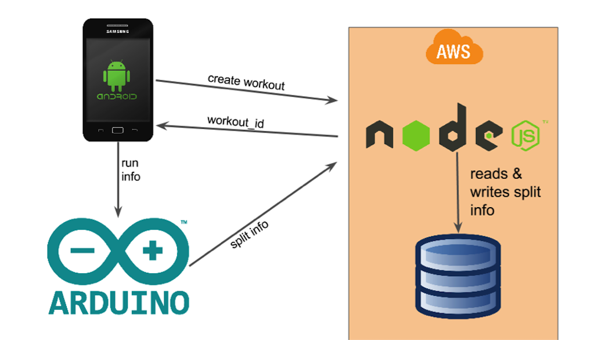
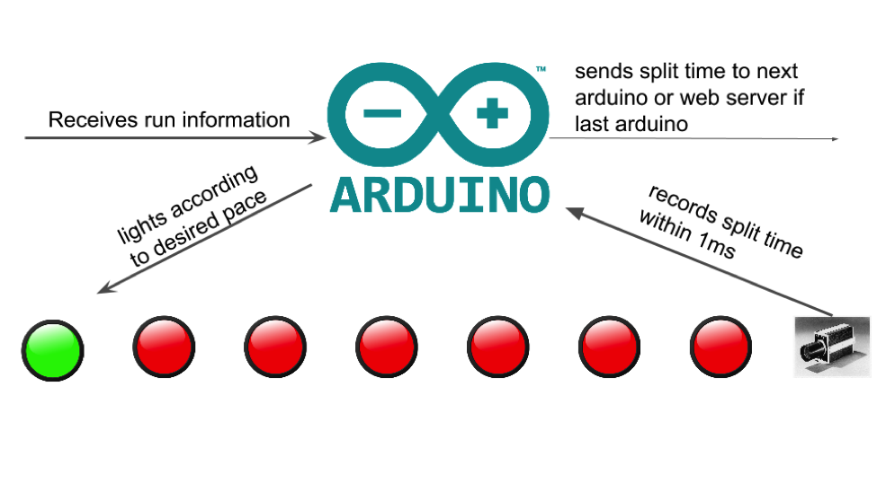

PaceMate is an intuitive and visual pacing system that updates in real-time according to an athlete's target and current pace.
This project was completed for the class 18848D: Special Topics in Embedded Systems: Sports Technology and then continued in Fall 2015 as an independent research project.
Motivation
Pace maintenance is one of the most important components of an athlete's training and estimating pace is difficult for athletes. Currently, athletes are dependent on mechanisms that either break their stride, are not providing continous feedback, or are simply not accurate enough.
PaceMate solves this problem by providing constant visual pacing feedback for athletes. It is highly adaptive to an individual athlete's workout needs and can be modified to fit a range of different workouts. A user simply enters his or her target workout and goal pace, and the PaceMate system of LEDs guide the user to hit the target pace.
Initial Prototype
We decided to focus on an athlete running on a track for our initial prototype of the system. We built a 50m prototype instead of a 400m prototype due to time and budget constraints, but the system is fully extensible by chaining 50m sgements together to achieve the target distance.
System Architecture
The PaceMate system consists of four key components:
-
Physical Pacing System (50m)
-
Arduino Yun Microcontroller
-
38 programmable RGB LEDs
-
Sonar Sensor to record splits
-
Vinyl Fabric Casing (50m)
-
Android Application
User can create a new workout
User can start/stop the workout
User can view his or her past workouts
-
Web Application
User can create an account
User can create a new workout entry through a form on the website
User can view his or her past workouts
REST API for Android to create a new workout entry and for Arduino to record split distances/times for a workout entry
-
MongoDB Database
 

Physical Pacing System
The pacing system consists of 38 programmable RGB LEDs connected in series, spaced out approximately every meter, and controlled by an Arduino Yun microcontroller. We decided to use the Arduino Yun because it has built in WiFi capabilities. We use a sonar sensor to detect user movement in order to record split times.
Essentially, the pacing system is one 50m strip of LEDs with the Arduino Yun microcontroller and the sonar sensor at the start (0m). The entire strip is encased in a vinyl fabric casing to protect the wiring of the system and the LEDs.
The Arduino Yun controls the system based on a series of states:
State 0: System Initialization
Initializes all 38 LEDs to a default color (red).
Arduino Yun initializes WiFi capabilities.
Calibrates sonar sensor to account for current lighting conditions and angle of sensor.
State 1: Waits for setup workout command
Receives command w/ target pace, target distance, and workout_id information from Android app.
Calculates iteration time per LED based on target pace.
Initializes timing constructs for 50m iterations of system.
State 2: Waits for start command
Upon recieving command, starts pacing system of LEDs and sonar sensor to detect user movement.
State 3: System paces the user
Lights up one LED (red to green) to guide the user at the correct pace based on calculated iteration time per LED.
Records splits every 50m using sonar sensor.
System runs until user has hit the target distance or it receives stop command via Android app.
Sends split times and distances to Web Application upon completion and moves back to State 1.
Android Application
The Home Page of the application allows users to create a new workout or to view their past workouts.
Creating a new workout
User specifies coach, athlete, description of workout, target distance, and target pace.
POST request to Web Application returns with a workout_id.
Upon receiving workout_id, sends workout_id, target pace, and target distance to Arduino Yun.
Redirects user to Workout Page.
Viewing past workouts
Open Web Application in the browser.
The Workout Page displays information about the current workout, allows the user to start/stop the workout, and lets them view their past workouts.
Web Application
Users can create an account consisting of a username and password. They can view their past workouts via a dashboard on the homepage, which displays any workout that the user account was associated with (either as a coach or an athlete). Users can create a new workout entry via a form on the new workout page.
The Web Application has a REST API for the Android app to create a new workout entry and for the Arduino Yun to record split distances/times for an existing workout.
MongoDB Database
The database stores User account information and workout entries.
We have a passively replicated database in AWS with one Primary Node, and two Backup Nodes in a MongoDB replica set to ensure redundancy and increase data availability. The Primary Node records all changes in an operation log. The Backup Nodes replicate this operation log asynchronously and apply data operations to ensure that they match the Primary Node.
If the Primary Node crashes, this is detected by the rest of the members in the replica set. This triggers a reelection process and a new node is elected to be Primary.


More Information
We are not currently running the Web Application or DB on AWS during development due to costs.
Homepage image taken from here.